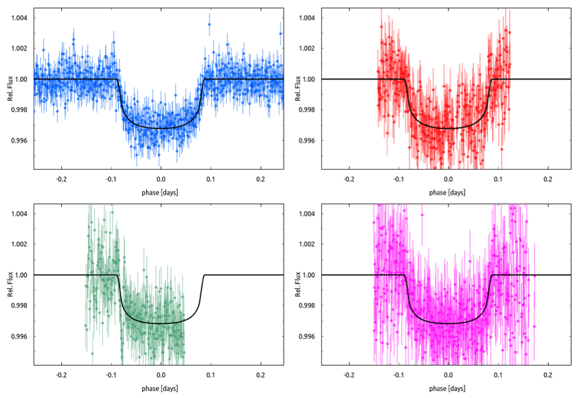
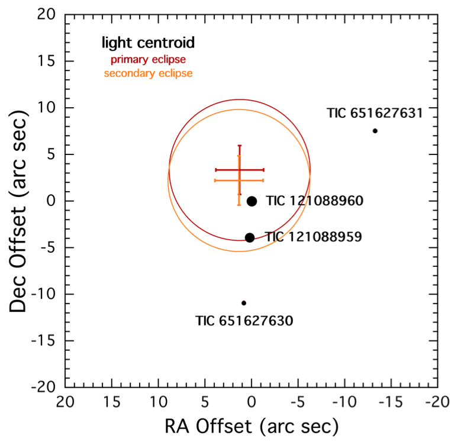

STATUS UPDATE: Orbit 2 of Sector 45 and orbit 1 of Sector 46 are now available to download as a TICA product from MAST.
Happy new year TESS followers! In 2022 we look forward to yet another a year full of TESS science. This week we are looking at three papers from the archive,
GJ 367b: A dense, ultrashort-period sub-Earth planet transiting a nearby red dwarf star (Lam et. al., 2021) :
In this Science publication the authors identified a planet, GJ 367b, which orbits its red dwarf host in ~ 7.7 hrs, making it an ultrashort-period exoplanet! The host star GJ 367, (also known as TOI-731) is a cool M-dwarf located 9.41 pc from our Sun, and has a V-band magnitude of 10.2.
A radius of 0.718 REarth was derived from transit measurements and a mass of 0.546 MEarth from radial velocity. This sub-Earth planet therefore has a bulk of 8.106 g cm-3, which is close to that of iron.
The planet is sub-Earth sized with a density of almost pure iron and a surface temperature close to the vaporization point of iron. This would suggest that we are seeing the exposed core of the planet with the outer mantel having been lost.
Polarimetric detection of non-radial oscillation modes in the β Cephei star β Crucis (Cotton et. al., 2021) :
The Solar Neighborhood XLIX: Nine Giant Planets Orbiting Nearby K Dwarfs, and the CHIRON Spectrograph's Radial Velocity Performance (Paredes et. al., 2021) :

Fig. 1: Taken from Wittenmyer et. al., (2021). Transit photometry data and model fit for TESS (blue, Sector 23), LCOGT data from SAAO (red), and CTIO (green and magenta). The transit model (black solid line) is constructed jointly with precise Doppler data as described in Sect. 4.2 of the paper.

Fig. 2: Taken from Han et. al., (2021). Light centroid for the primary eclipse (red cross) and secondary eclipse (orange cross). The locations of TIC 121088960 and TIC 121088959 are indicated as heavy filled circles on the plot. The arms on the crosses represent the ±1 − 𝜎 uncertainties on the light centroids, while the circles correspond to the 3 − 𝜎 range on the centroid locations. These demonstrate that the eclipses occur with a few arc seconds of the target stars. Specifically, the eclipses are distinctly closer to TIC 121088960 and rule against TIC 121088959 at the 2.9 𝜎 and 2.4 𝜎 level for the primary and secondary eclipses, respectively. The other two marked stars are at > 20 th magnitude.